Galería Visual
Imágenes que capturan la belleza natural, cultural e histórica de El Salvador
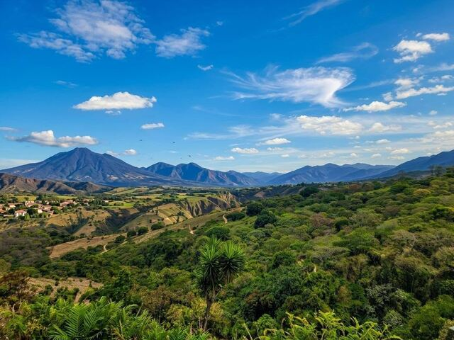
Bosque Tropical
Parque Nacional El Imposible
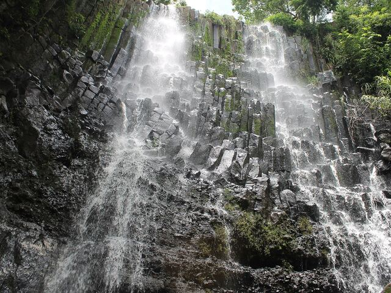
Cascadas Escondidas
Cascada Los Tercios, Suchitoto
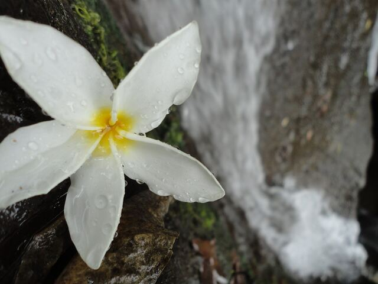
Flora Tropical
Flora de El Imposible
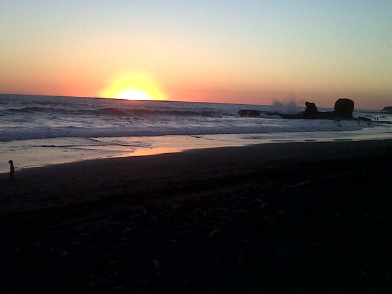
Playa El Tunco
Paraíso del surf con olas perfectas
Costa del Pacífico
Costa del Sol
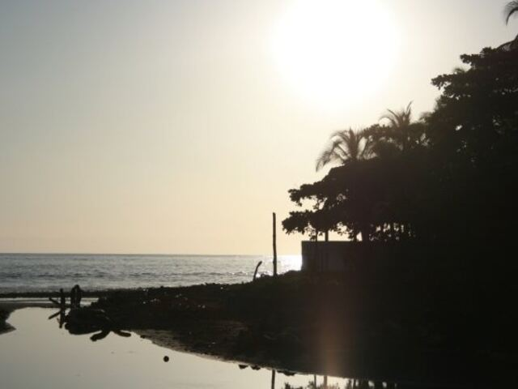
Atardeceres Mágicos
El Tunco
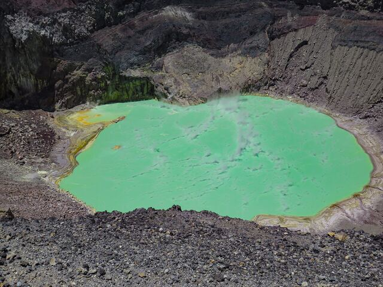
Volcán de Santa Ana
Laguna del cráter
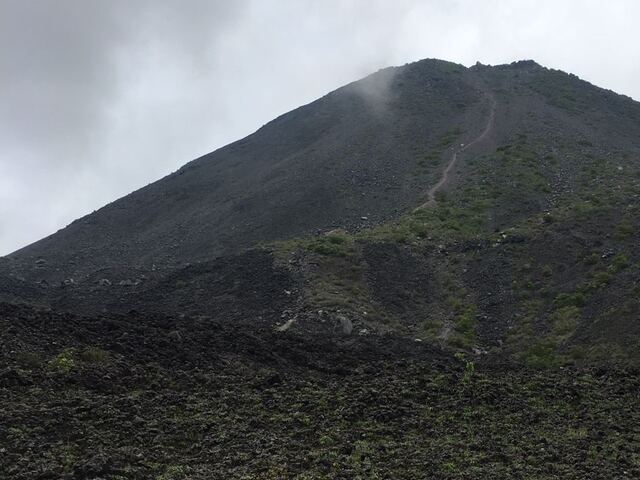
Volcán de Izalco
El joven gigante de forma perfecta
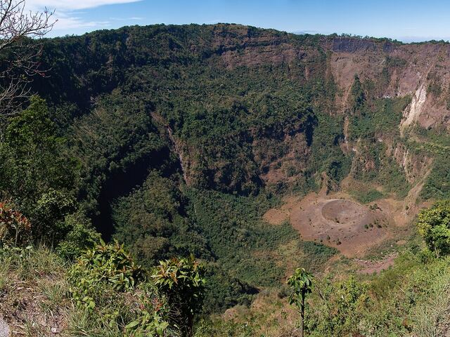
Paisajes Volcánicos
El Boquerón
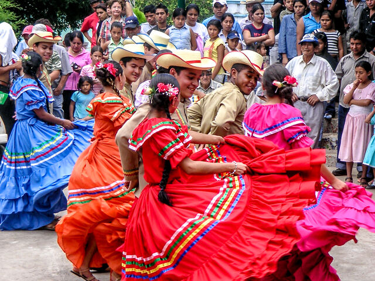
Danzas Folklóricas
Tradiciones que perduran en el tiempo
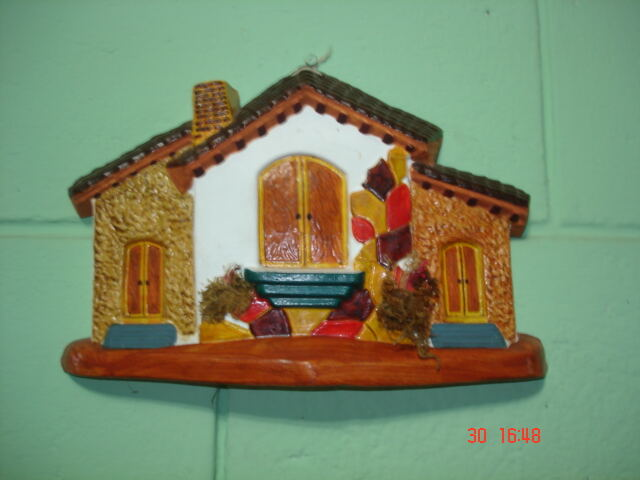
Arte Tradicional
La Palma, Chalatenango
Música Folklórica
Ritmos que conmueven el alma
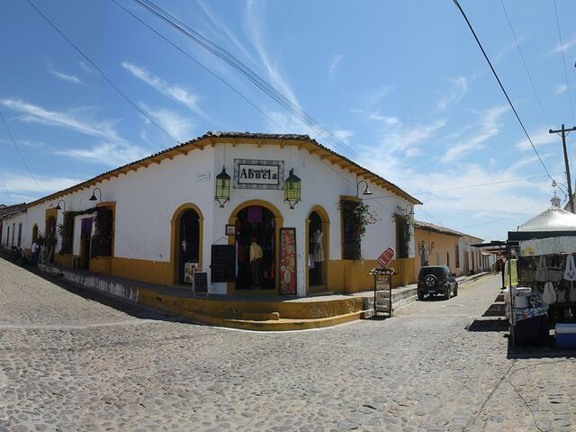
Suchitoto Colonial
Arquitectura preservada del siglo XVIII
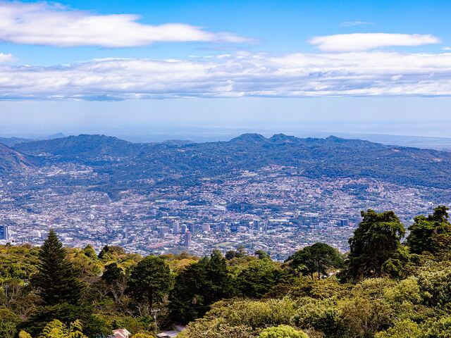
San Salvador Moderno
Capital vibrante y cosmopolita
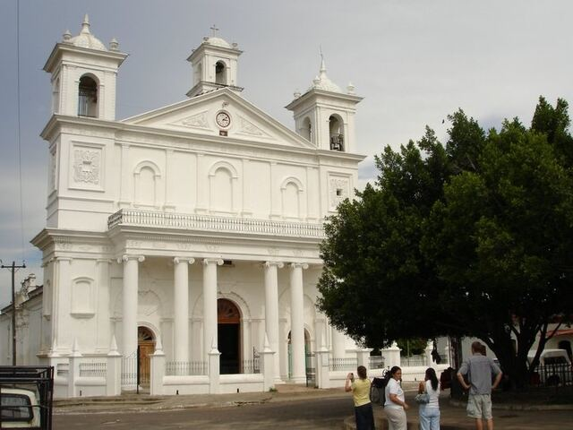
Herencia Colonial
Catedral de Suchitoto
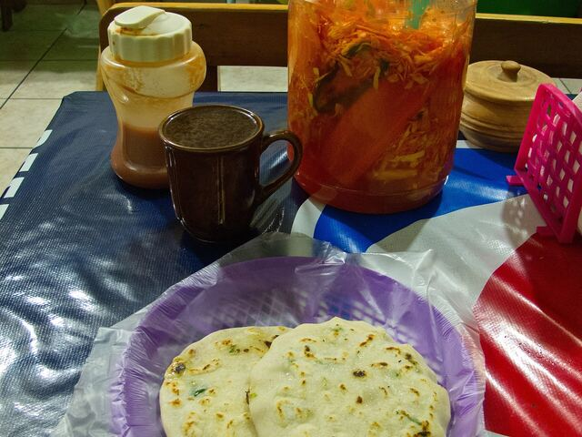
Pupusas Tradicionales
El plato nacional por excelencia
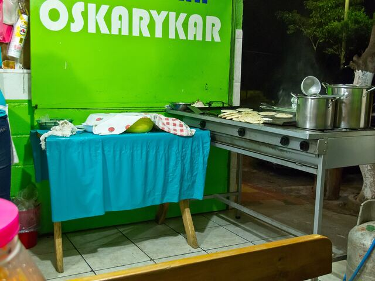
Cocina Criolla
Sabores auténticos salvadoreños
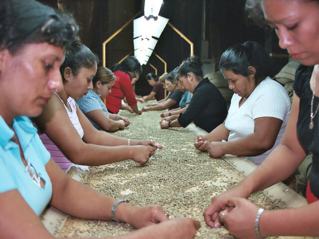
Café de Altura
Granos de calidad mundial
Comparte tus Fotos
¿Visitaste El Salvador? ¡Comparte tus mejores momentos con nosotros!
📸
Instagram
#ElSalvadorTravel #VisitElSalvador
📱
Facebook
Etiquétanos en tus publicaciones
✉️
Email
Envíanos tus mejores fotos
Tours Virtuales
Explora El Salvador desde casa con nuestros tours interactivos
Experimenta la majestuosidad de nuestros volcanes en 360°
🏛️
Tour Histórico Suchitoto
Recorre las calles coloniales de nuestro pueblo cultural
🏖️
Tour Playas del Pacífico
Siente la brisa marina y las olas del surf
Videos Destacados
▶️
Video: El Salvador Aéreo
Paisajes desde el Cielo
Vistas aéreas espectaculares de nuestros destinos más hermosos
Tradiciones Salvadoreñas
Inmersión en nuestras festividades y costumbres ancestrales
▶️
Video: Aventuras Extremas
Deportes de Aventura
Surf, senderismo y escalada en los mejores spots del país